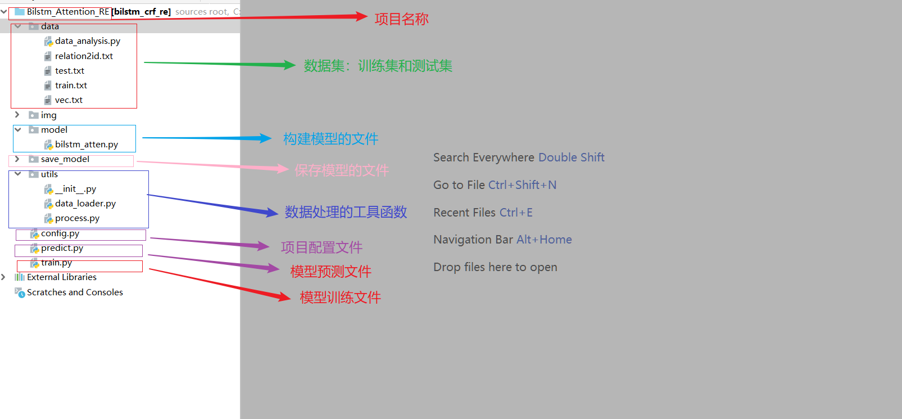

3.3 BiLSTM+Attention模型的数据预处理
BILSTM+Attention模型数据处理¶
学习目标¶
- 了解本项目数据来源、明确数据格式
- 掌握数据处理的工具函数代码实现.
项目整体代码架构图¶

关系抽取项目数据预处理¶
- 本项目中对数据部分的预处理步骤如下:
- 第一步: 查看项目数据集
- 第二步: 编写Config类项目文件配置代码
- 第三步: 编写数据处理相关函数
- 第四步: 构建DataSet类与dataloader函数
第一步: 查看项目数据集¶
- 本次项目数据原始来源为公开的千言数据集https://www.luge.ai/#/，使用开源数据的好处，我们无需标注直接使用即可，本次项目的主要需要大家掌握实现关系抽取的思想。
- 本次项目数据的路径为: /home/ec2-user/Bilstm_Attention_RE/data
- 项目的数据集包括3个文件:
- 第一个关系类型文件: /home/ec2-user/Bilstm_Attention_RE/data/relation2id.txt
导演 0
歌手 1
作曲 2
作词 3
主演 4
- relation2id.txt中包含5个类别标签, 文件共分为两列，第一列是类别名称，第二列为类别序号，中间空格符号隔开
- 第二个训练数据集: /home/ec2-user/Bilstm_Attention_RE/data/train.txt
今晚会在哪里醒来 黄家强 歌手 《今晚会在哪里醒来》是黄家强的一首粤语歌曲，由何启弘作词，黄家强作曲编曲并演唱，收录于2007年08月01日发行的专辑《她他》中
似水流年 许晓杰 作曲 似水流年，由著名作词家闫肃作词，著名音乐人许晓杰作曲，张烨演唱
交涉人 朝日电视台 出品公司 《交涉人》是日本朝日电视台制作并播出的8集悬疑推理电视剧
生活启示录 闫妮 主演 05闫妮接到《生活启示录》之后，就向王丽萍推荐了胡歌
北京北京 汪峰 歌手 ”汪峰我印象最深刻的是汪峰的《北京北京》蚀骨唱成烛骨
千岁情人 王菲 主演 难怪春晚把那英秒成不一样很多人都不知道 王菲演 的这部《千岁情人》，是1993年的一部穿越剧
天使的咒语 魏雪漫 歌手 魏雪漫专辑《天使的咒语》的同名主打歌曲
与青春有关的日子 白百何 主演 白百何的处女座是《与青春有关的日子》，合作的演员是佟大为、陈羽凡
高高至上 秋言 作词 专辑曲目序号 曲目作词作曲编曲1高高至上秋言秋言彭飞2高高至上（伴奏） 秋言秋言彭飞
train.txt 中包含18267行样本, 每行分为4列元素，元素中间用空格隔开，第一列元素为实体1、第二列元素为实体2、第三列元素为关系类型、第四列元素是原始文本
- 第三个测试数据集:/home/ec2-user/Bilstm_Attention_RE/data/test.txt
三生三世十里桃花 安悦溪 主演 当《三生三世》4位女星换上现代装: 第四，安悦溪在《三生三世十里桃花》中饰演少辛，安悦溪穿上现代装十分亮眼，气质清新脱俗
失恋33天 白百何 主演 2011年，担任爱情片《失恋33天》的编剧，该片改编自鲍鲸鲸的同名小说，由文章、白百何共同主演6
爱人们的故事 裴勇俊 主演 《爱人们的故事》是全基尚导演，裴勇俊、李英爱、李慧英等主演的18集爱情类型的电视剧
为你叫好 吕薇 歌手 基本资料 歌曲名称: 为你叫好1歌手: 吕薇 所属专辑: 《但愿人长久》歌词 歌手: 吕薇 词: 清风 曲: 刘青
卡拉是条狗 路学长 导演 个人生活李佳璇和导演路学长因拍摄《卡拉是条狗》而相识，2003年两人结婚
上帝创造女人 简-路易斯·特林提格南特 主演 《上帝创造女人》是罗杰·瓦迪姆执导的粉红浪漫爱情影片，由碧姬·芭铎和简-路易斯·特林提格南特参加演出
上帝创造女人 碧姬·芭铎 主演 《上帝创造女人》是罗杰·瓦迪姆执导的粉红浪漫爱情影片，由碧姬·芭铎和简-路易斯·特林提格南特参加演出
test.txt中包含5873行样本, 每行分为4列元素，元素中间用空格隔开，第一列元素为实体1、第二列元素为实体2、第三列元素为关系类型、第四列元素是原始文本
第二步:编写Config类项目文件配置代码¶
- Config类文件路径为: /home/ec2-user/Bilstm_Attention_RE/config.py
- config文件目的: 配置项目常用变量，一般这些变量属于不经常改变的，比如: 训练文件路径、模型训练次数、模型超参数等等
# coding:utf-8
import torch
class Config(object):
def __init__(self):
self.device = torch.device('cuda' if torch.cuda.is_available() else 'cpu')
self.train_data_path = "训练文件绝对路径名称"
self.test_data_path = "测试文件绝对路径名称"
self.rel_data_path = "关系类型文件绝对路径名称"
self.embedding_dim = 128
self.pos_dim = 32
self.hidden_dim = 200
self.epochs = 50
self.batch_size = 32
self.max_len = 70
self.learning_rate = 1e-3
第三步: 编写数据处理相关函数¶
- 数据处理相关函数的路径为: /home/ec2-user/Bilstm_Attention_RE/utils/process.py
- 首选导入必备的工具包
# coding:utf-8
from config import *
from itertools import chain
from collections import Counter
conf = Config()
# 获取关系类型字典
relation2id = {}
with open(conf.rel_data_path, 'r', encoding='utf-8')as fr:
for line in fr.readlines():
word, id = line.rstrip().split(' ')
if word not in relation2id:
relation2id[word] = id
- 构建第一个数据处理相关函数sent_padding, 位于process.py中的独立函数.
def sent_padding(words, word2id):
"""把句子 words 转为 id 形式，并自动补全为 max_len 长度。"""
ids = []
for word in words:
if word in word2id:
ids.append(word2id[word])
else:
ids.append(word2id['UNKNOW'])
if len(ids) >= conf.max_len:
return ids[:conf.max_len]
ids.extend([word2id['BLANK']]*(conf.max_len-len(ids)))
return ids
- 构建第二个数据处理相关函数pos, 位于process.py中的独立函数.
def pos(num):
'''
将实体位置信息进行转换，因为pos_embedding不能出现负数
'''
if num < -70:
return 0
if num >= -70 and num <= 70:
return num+70
if num > 70:
return 142
- 构建第三个数据处理相关函数position_padding, 位于process.py中的独立函数.
def position_padding(pos_ids):
'''
"""把 pos位置信息 转为 id 形式，并自动补全为 max_len 长度。"""
'''
pos_ids = [pos(id) for id in pos_ids]
if len(pos_ids) >= conf.max_len:
return pos_ids[:conf.max_len]
pos_ids.extend([142]*(conf.max_len - len(pos_ids)))
return pos_ids
- 构建第四个数据处理相关函数get_train_data, 位于process.py中的独立函数.
def get_txt_data(data_path):
'''
编码训练、测试数据集格式
'''
datas = []
labels = []
positionE1 = []
positionE2 = []
entities = []
count_dict = {key: 0 for key, value in relation2id.items()}
with open(data_path, 'r', encoding='utf-8')as tfr:
for line in tfr.readlines():
line = line.rstrip().split(' ', maxsplit=3)
if line[2] not in count_dict:
continue
if count_dict[line[2]] > 2000:
continue
else:
entities.append([line[0], line[1]])
sentence = []
index1 = line[3].index(line[0])
position1 = []
index2 = line[3].index(line[1])
position2 = []
assert len(line) == 4
for i, word in enumerate(line[3]):
sentence.append(word)
position1.append(i-index1)
position2.append(i-index2)
datas.append(sentence)
labels.append(relation2id[line[2]])
positionE1.append(position1)
positionE2.append(position2)
count_dict[line[2]] += 1
return datas, labels, positionE1, positionE2, entities
- 构建第五个数据处理相关函数get_word_id, 位于 process.py 中的独立函数.
def get_word_id(data_path):
'''
文本数字化表示处理，得到word2id, id2word
'''
datas, labels, positionE1, positionE2, entities = get_txt_data(data_path)
data_list = list(set(chain(*datas)))
word2id = {word: id for id, word in enumerate(data_list)}
id2word = {id: word for id, word in enumerate(data_list)}
word2id["BLANK"] = len(word2id)
word2id["UNKNOW"] = len(word2id)
id2word[len(id2word)] = "BLANK"
id2word[len(id2word)] = "UNKNOW"
return word2id, id2word
第四步: 构建DataSet类以及Dataloader函数¶
- 代码路径为: /home/ec2-user/Bilstm_Attention_RE/utils/data_loader.py
- 首先导入相应的工具包
# coding:utf-8
import os
from torch.utils.data import DataLoader, Dataset
from utils.process import *
import torch
- 构建第一个数据处理相关类MyDataset, 位于data_loader.py中的独立类.
class MyDataset(Dataset):
def __init__(self, data_path):
self.data = get_txt_data(data_path)
def __len__(self):
return len(self.data[0])
def __getitem__(self, index):
sequence = self.data[0][index]
label = int(self.data[1][index])
positionE1 = self.data[2][index]
positionE2 = self.data[3][index]
entites = self.data[4][index]
return sequence, label, positionE1, positionE2, entites
- 构建第二个数据处理相关函数collate_fn, 位于data_loader.py中的独立函数.
def collate_fn(datas):
sequences = [data[0] for data in datas]
labels = [data[1] for data in datas]
positionE1 = [data[2] for data in datas]
positionE2 = [data[3] for data in datas]
entities = [data[4] for data in datas]
word2id, id2word = get_word_id(conf.train_data_path)
sequences_ids = []
for words in sequences:
ids = sent_padding(words, word2id)
sequences_ids.append(ids)
positionE1_ids = []
positionE2_ids = []
for pos_ids in positionE1:
pos1_ids = position_padding(pos_ids)
positionE1_ids.append(pos1_ids)
for pos_ids in positionE2:
pos2_ids = position_padding(pos_ids)
positionE2_ids.append(pos2_ids)
datas_tensor = torch.tensor(sequences_ids,
dtype=torch.long,
device=conf.device)
positionE1_tensor = torch.tensor(positionE1_ids,
dtype=torch.long,
device=conf.device)
positionE2_tensor = torch.tensor(positionE2_ids,
dtype=torch.long,
device=conf.device)
labels_tensor = torch.tensor(labels,
dtype=torch.long,
device=conf.device)
return datas_tensor, positionE1_tensor, positionE2_tensor, labels_tensor, sequences, labels, entities
- 构建第三个数据处理相关函数get_loader_data, 位于data_loader.py中的独立函数.
def get_loader_data():
train_data = MyDataset(conf.train_data_path)
train_dataloader = DataLoader(dataset=train_data,
batch_size=conf.batch_size,
shuffle=False,
collate_fn=collate_fn,
drop_last=True)
test_data = MyDataset(conf.test_data_path)
test_dataloader = DataLoader(dataset=test_data,
batch_size=conf.batch_size,
shuffle=False,
collate_fn=collate_fn,
drop_last=True)
return train_dataloader, test_dataloader
小结总结¶
- 本小节讲解了关系抽取数据结构形式, 并实现了若干数据处理函数, 这些函数会在未来的项目代码中应用.